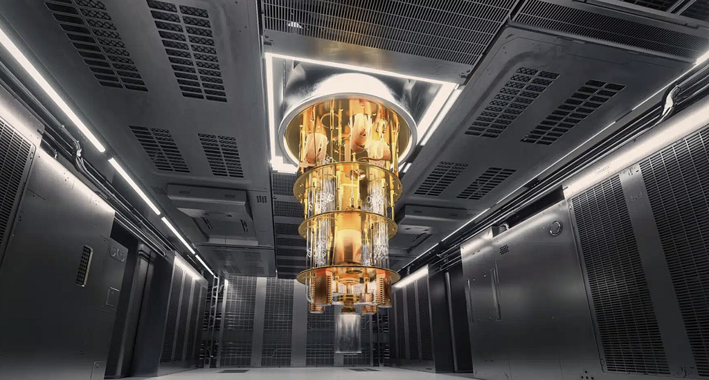
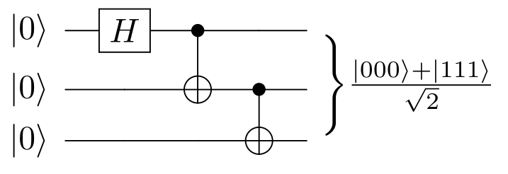

Writing · 10 February 2026 · Artificial Intelligence · Emerging Technology · Future of Technology
Quantum Computing: What’s the Fuss About

For a long time, quantum computing sounded like one of those topics people mention to sound futuristic: Qubits. Superposition. Entanglement. Big words, big promises, very little intuition.
Before taking a Quantum Programming course at my master in Stockholm University, I kept coming back to two simple questions:
- What is all the fuss about?
- And more importantly, what does quantum programming actually mean?
This article is my attempt to answer those questions in a concrete way, based on what finally clicked for me during the course. It is written for curious beginners, engineers, and anyone who wants a mental model that goes beyond buzzwords.
From “Faster Computers” to “Shaping Probabilities”
One of the first misconceptions I had was thinking that quantum programming meant writing code for faster computers. It does not.
Quantum programming is about designing quantum circuits that control qubits so that the physics of superposition, interference, and entanglement pushes probability toward the right answer. There is no free speedup.
You earn it by carefully structuring the circuit so that, when you finally measure the system, the probability distribution favors the outcome you want.
Qubits and Superposition: Not Both Answers at Once
A classical bit is either 0 or 1.
A qubit can exist in a combination of both, but that description becomes misleading if taken too literally. When you measure a qubit, you always get a definite 0 or 1.
The real power is not in “having both answers”. It is in interference.
Quantum algorithms use interference to amplify the probability of desirable outcomes and suppress the rest. Superposition is the starting point, not the end goal.
Measurement Is Not Reading Memory
This was one of the most counterintuitive lessons for me.
In classical computing, reading memory does not change its content. In quantum computing, measurement fundamentally alters the system.
Measurement is not observation. It is sampling.
You are sampling an outcome from a probability distribution that you have deliberately engineered through gates and interference.
Once you measure, the quantum state collapses. There is no going back.
Entanglement: One System, Not Many Parts

Entanglement is often described as mysterious, but thinking of entangled qubits as separate objects misses the point.
Entangled qubits behave like one system.
Measuring one qubit immediately gives you information about the other, regardless of distance. Many quantum protocols rely on entanglement as a computational and informational resource.
Measuring one qubit gives you information about the other, regardless of distance, though this does not enable faster-than-light communication.
Gates and Circuits: Programming with Reversible Operations
Quantum programs are built from unitary gates, which are reversible operations.
Some of the most common gates I learned and used were:
- H (Hadamard), to create superposition
- X and Z, quantum analogs of classical bit flips and phase flips
- Controlled gates like CNOT, essential for entanglement
Unlike classical code, a single misplaced gate can completely change the final probability distribution. Debugging becomes less about syntax and more about reasoning through linear algebra and phase.
It is precise, unforgiving, and unexpectedly elegant.
Algorithms That Changed My Intuition
Several algorithms helped solidify these concepts.
Grover’s Search: Often summarized as a quadratic speedup, Grover’s algorithm is really about amplitude amplification. Each iteration uses an oracle and a diffusion operator to gradually push probability mass toward the correct solution.
Bernstein–Vazirani: A clean example of extracting global structure efficiently. It also taught me why problem framing and oracle design matter so much in quantum algorithms.
Quantum Fourier Transform (QFT): QFT forced me to think in terms of phase, not just probability. It feels familiar to classical Fourier transforms, but the circuit-based implementation changes how you reason about it.
The Reality of Today’s Quantum Hardware
The course also removed any remaining illusions.
- Noise is the default
- Shots matter because results are statistical
- Circuit depth matters because each additional gate introduces error
- Simulators and real hardware can behave very differently
Quantum computing today is powerful, but fragile. Understanding its limitations is as important as understanding its potential.
Will Quantum Computing Break All Cryptography?
This is one of the first questions people ask when quantum computing comes up.
Will quantum programming make today’s security keys useless? Will it break all cryptography? Are we close to that moment?
The honest answer is no, not in the dramatic way it is often portrayed.
Quantum computing does not threaten all cryptography. It threatens specific cryptographic assumptions.
What Is Actually at Risk
Some public key cryptographic systems rely on mathematical problems such as:
- Factoring large integers, as used in RSA
- Discrete logarithms, as used in elliptic curve cryptography and Diffie-Hellman
A sufficiently large and fault-tolerant quantum computer running algorithms like Shor’s could solve these problems efficiently.
The key phrase here is sufficiently large and fault-tolerant.
What Is Not at Risk
Symmetric cryptography, such as AES, is not broken in the same way.
Quantum algorithms like Grover’s offer a quadratic speedup for brute force search, but this does not collapse security. It simply reduces the effective key strength.
In practice, this is handled by increasing key sizes. AES 256, for example, is still considered safe even in a quantum-aware world.
Are We Close to a Cryptographic Collapse?
No. We are very far from it.
Breaking real world cryptographic keys would require:
- Millions of high-quality physical qubits
- Large-scale quantum error correction
- Extremely low noise and long coherence times
- Stable execution of very deep circuits
Current quantum hardware is orders of magnitude away from that reality.
Why Is This Taken So Seriously Then?
Because security planning works on long timelines.
Some data must remain secure for decades. This creates a real concern known as harvest now, decrypt later, where data is collected today and decrypted in the future.
That is why the cryptography community is already migrating toward post-quantum cryptography, based on mathematical problems for which no efficient quantum algorithms are known.
This transition is already happening.
What is next?
Quantum is a hot topic in the technology world today, alongside AI and robotics. I cannot wait to explore the intersections between all of them. What about you?
For those who want to learn more, the best path combines theory with hands-on practice. I have left a few references next.
References
- Nielsen, M. A., & Chuang, I. L. (2010). Quantum Computation and Quantum Information. Cambridge University Press.
- IBM Quantum. IBM Quantum Experience Documentation. Available at: https://quantum.ibm.com/
- Qiskit Documentation. https://qiskit.org/documentation/
- IBM Quantum. (n.d.). IBM Quantum Learning: Courses. Available at: https://quantum.cloud.ibm.com/learning/en/courses
- Preskill, J. (2018). Quantum Computing in the NISQ era and beyond. Quantum, 2, 79. https://doi.org/10.22331/q-2018-08-06-79